Every release, newest first. Versions follow SemVer, and until 1.0 a minor version may still rename a setting or a command. The .vsix for each version is attached to its GitHub release. Porcelain took its identity at 0.7.0 and its name at 0.8.0; the releases before that are the fork's lineage as BranchShift and JetGit Plus, kept below the fold.
Search modes on the log filter. the commit search gains IntelliJ-style Match Case (Cc) and Regex (.*) toggles. Search is now literal and case-insensitive by default; it used to be handed to git log --grep raw, which silently treated every query as a case-sensitive regex — searching f.x matched fax
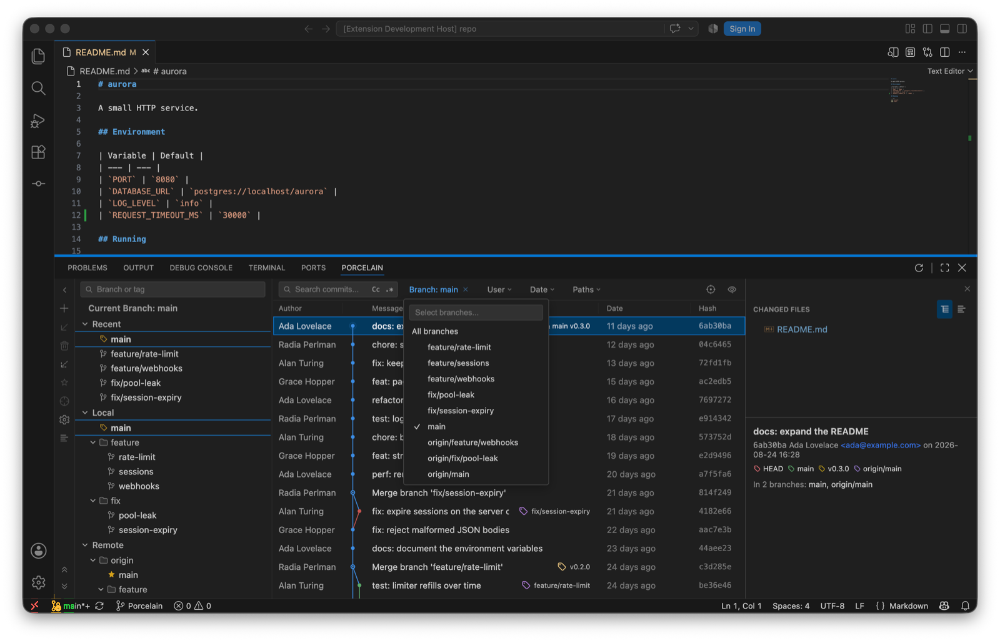
The log toolbar: search with the Cc and .* toggles, and the multi-select Branch filter.
Custom date range. the Date filter's dropdown adds an After/Before date pair alongside the presets, sent to git as inclusive day bounds
Whole-history author filter. the User dropdown now lists every author in the repository (via git shortlog), most-commits first, with the configured user.name pinned to the top as "(me)". It used to offer only authors present in the loaded page
Collapse / Expand Linear Branches. the log's View Options menu can now collapse every collapsible linear run in one action, and expand them all back, matching the per-fragment click collapse
"In N branches". the details pane for a single selected commit shows which local and remote branches contain it, loaded lazily with Show all / Hide
Paths filter. a Paths toolbar filter narrows the log to commits touching the given files or folders (one pathspec per line), alongside the file-history chip
Go to hash / branch / tag. a toolbar action (and ⌘G/Ctrl+G) opens a popup with branch/tag completion; free text resolves as a full or abbreviated commit hash and the log navigates to it, clearing any filters that would hide it
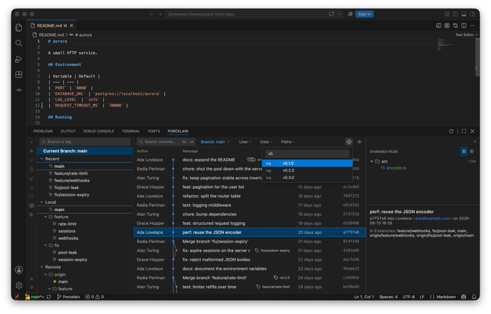
Go to, filtering tags as you type.
Graph modes. View Options gains Sort Topologically, First Parent Only, and No Merge Commits, mapped to git's --topo-order, --first-parent, and --no-merges
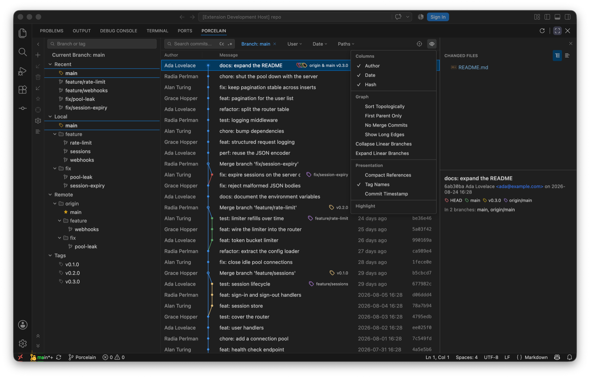
View Options: graph modes, highlighters and presentation toggles.
Long-edge stubs. edges spanning more than 30 rows collapse into a pair of arrow stubs, IntelliJ style; clicking a stub jumps to the edge's other end. "Show Long Edges" restores full drawing
Highlighters. My Commits (emphasizes commits by the configured user.name), Dim Merge Commits, and Fade Other Branches (the existing reachability dimming, now toggleable), all persisted
Presentation toggles. Compact References (first label + "+N"), Tag Names on/off, and Commit Timestamp (committer date instead of author date, now carried by the log format)
Multi-commit cherry-pick. selecting several commits offers "Cherry-Pick N Commits", applied oldest-first in one git cherry-pick invocation so the existing conflict banner covers a mid-sequence stop
Worktrees. a Worktrees command lists linked working trees with their branch and state (main, locked, prunable), opens one in a new window, creates one on a new branch, removes one (offering force when git refuses), and prunes records whose directories are gone
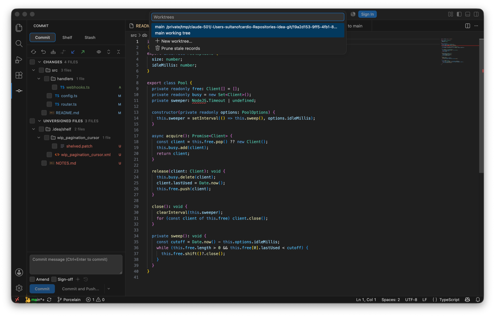
Worktrees…: the list, then New worktree… and Prune stale records.
Git Operations popup. ⌘⌥G / Ctrl+Alt+G opens a quick list of the verbs reached for most: commit, push, update, search commits, blame, resolve conflicts, and worktrees. IntelliJ puts this on Alt+`
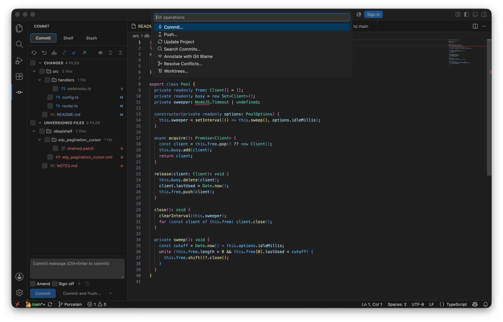
The Git Operations popup.
Search Commits. find a commit by message or by hash from the palette, then copy its revision
Diff ignore policies. the whitespace menu grows from two options to IntelliJ's four: do not ignore, ignore leading and trailing, ignore whitespaces, and ignore whitespaces and empty lines. The last two compare normalized copies of both sides, so re-indenting and re-wrapping stop reading as changes while the chunks still address the real lines
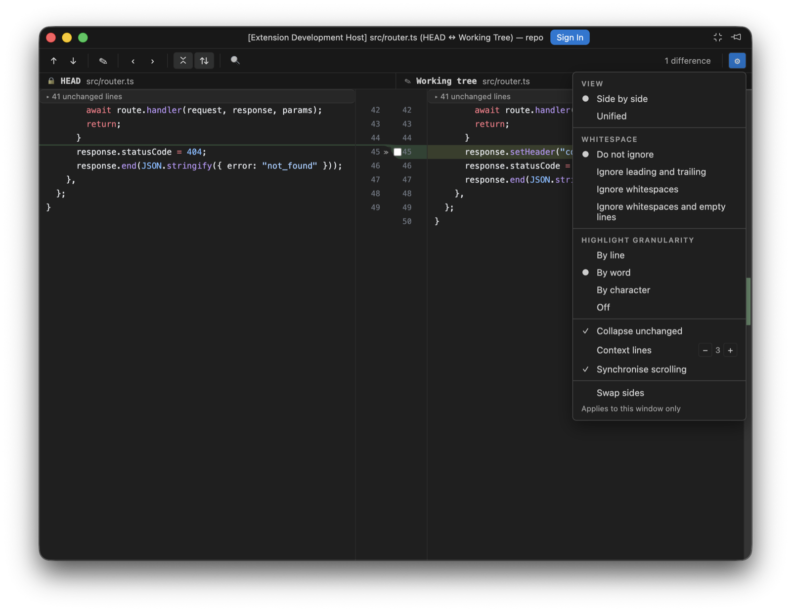
The diff settings menu, with the four whitespace policies.
Apply non-conflicting changes and Resolve automatically. two merge-toolbar actions. The first takes every region only one side actually changed, which loses nothing by definition. The second combines both sides wherever their edits touch different base lines, and deliberately leaves anything overlapping for you: a region where both sides rewrote the same line is never auto-merged
Blame. "Annotate with Git Blame" in the editor context menu draws an author-and-date column beside every line, with a hover carrying the commit's subject, author, date, and short hash. Blame Options chooses how lines are coloured (by age, by author, or not at all), how names are written (initials, full name, or email), whether whitespace-only changes are ignored, and whether moved lines are followed within a file or across files. Uncommitted lines are marked as such rather than attributed to anyone
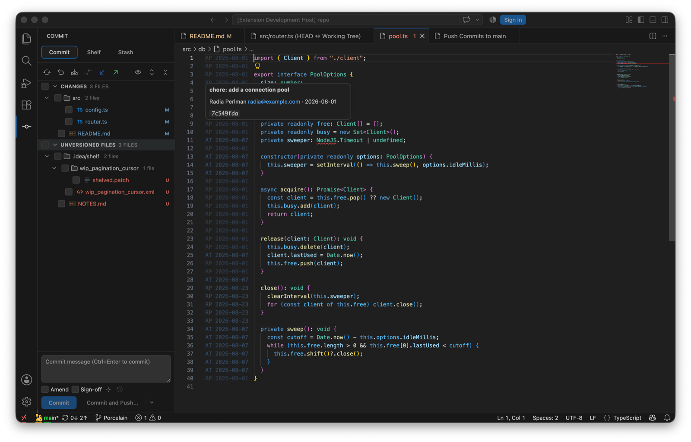
Annotate with Git Blame: initials and date per line, shaded by age, and the hover card.
Protected branches.porcelain.push.protectedBranches (regular expressions, defaulting to main and master) refuses a force push outright instead of confirming it. Force push already used --force-with-lease, which declines when the remote moved in a way porcelain has not seen; the protected list is the guard in front of that
Update Project. one action that fetches and then brings the current branch up to date by merge or rebase, per porcelain.update.method, carrying uncommitted work across with an autostash and reporting the commits that arrived. porcelain.fetch.tags chooses whether tags come along
Push options and sync counts. set upstream while pushing a new branch, push tags, and skip pre-push hooks; incoming and outgoing counts per branch are read from already-fetched refs, so they cost no network round-trip
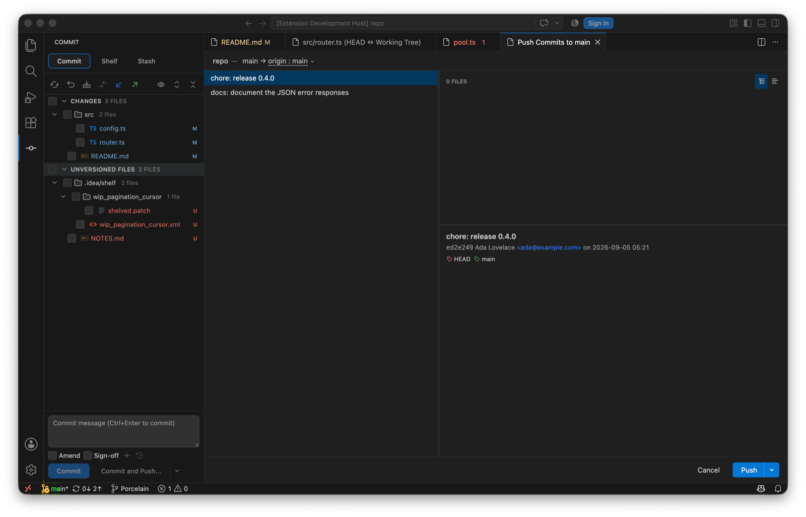
The push panel, with the options under the Push dropdown.
Per-hunk staging. individual hunks can be staged and unstaged: porcelain parses the file's diff, rebuilds a patch from just the chosen hunks (renumbering the ones that follow a skipped hunk), and lets git apply it with context still verified, so a file that changed underneath refuses rather than applying in the wrong place. A change can also be addressed by its line range rather than by hunk, which is how the diff surface reaches exactly the block pointed at: git merges changes closer together than its context width into one hunk, so addressing by hunk would take neighbouring blocks with it
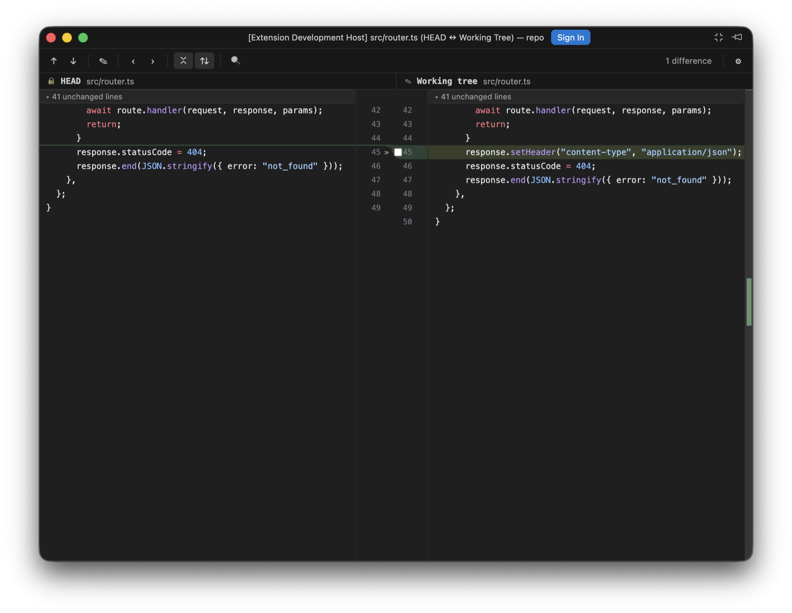
A working-tree diff from the Commit view: the gutter checkbox is the hunk's inclusion.
Commit options. Sign-off beside Amend, plus a commit-options panel with Skip commit hooks and an Author override (rejected before reaching git if it looks like an option). An empty commit message is seeded from commit.template, or from git's own MERGE_MSG while a merge is in progress
Stash options and .gitignore. stash with keep-index, include-untracked, and a message; turn a stash into a branch; and add a path to .gitignore without duplicating an entry that is already there
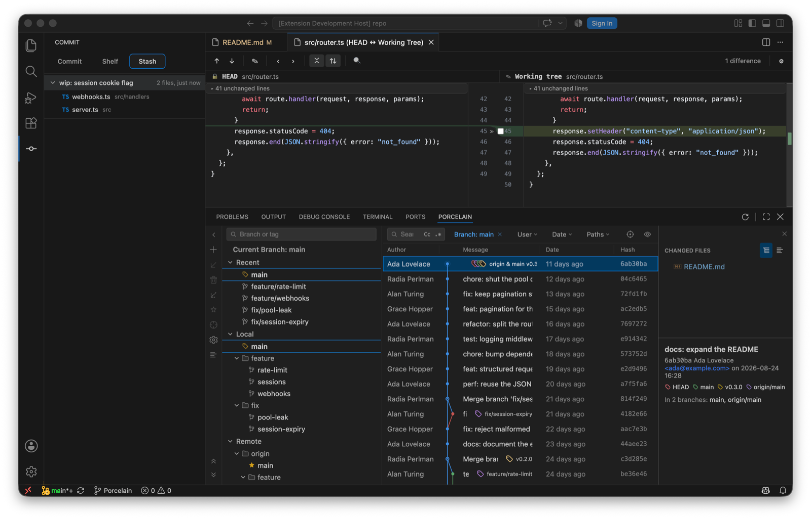
The Stash tab.
Interactive rebase editor. "Interactively Rebase from Here..." on a commit opens a Rebasing Commits table: pick / reword / stop-to-edit / squash / fixup / drop per commit, inline message editing for reword and squash, move up/down to reorder, Reset to restore the loaded plan, and View Git Commands to read the exact git-rebase-todo before starting. Porcelain drives real git rebase -i through GIT_SEQUENCE_EDITOR, so hooks, rerere, and the merge machinery behave exactly as git intends; a conflict stops in the existing continue/abort/skip banner
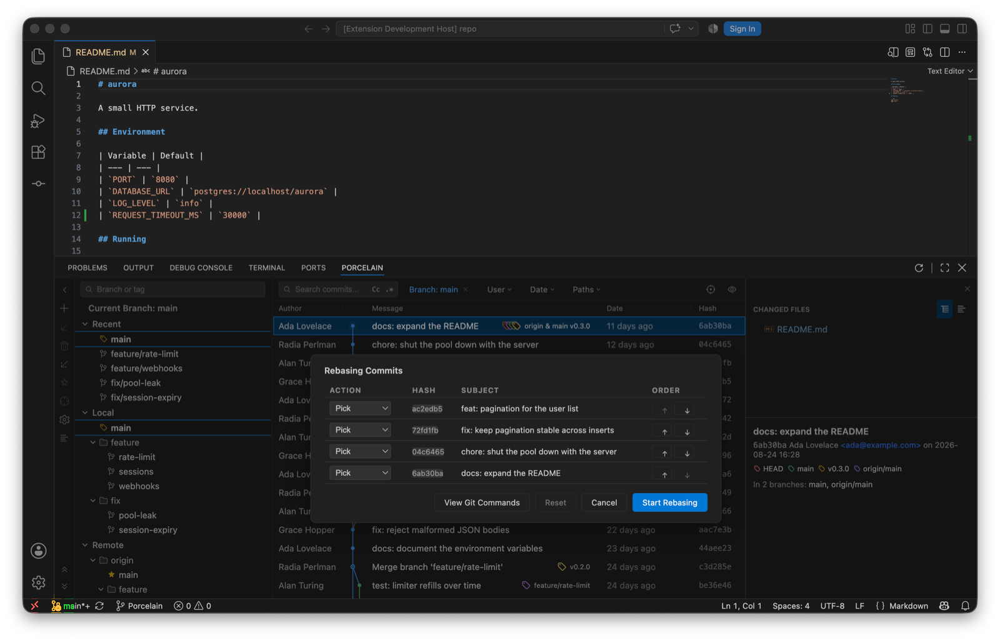
Rebasing Commits.
Reword, Squash, Fixup, Undo Commit. edit any commit's message (an amend at HEAD, a reword rebase below it), fold a multi-selection into one commit under a combined message, commit the working tree as a fixup! of a chosen commit, and undo the tip commit while keeping its changes staged. All are disabled while another Git operation is in progress, with the reason shown
Branch and tag verbs. smart checkout (stash → switch → restore) when local changes block a swap, force-delete that first names the commits it would discard, reset-to-upstream on the checked-out branch, and a Recent section in the branch tree read from the reflog. Tags gain Checkout, Push Tag, Delete Tag, and Delete Tag on Remote, with the remote-bound pair disabled when the repository has no remote
Manage Remotes. a Name/URL table for adding, renaming, re-pointing, and removing remotes, reachable from the branch pane's settings menu. Remote names and URLs that look like git options are rejected before they reach the command lineManage Remotes.
Clean Up Branches. a table of local branches with last-commit date, tracked branch, and merge status, filtered by a directory-style prefix; merged branches are pre-selected and unmerged ones are only ever deleted with an explicit, counted forceClean Up Branches, merged branches pre-selected.
Multi-branch filter. the Branch filter is now multi-select: the dropdown stays open while combining branches with checkboxes, and the log shows the union of everything reachable from the chosen refs, IntelliJ style. A plain click in the branch tree still replaces the filter with that one refThe Branch filter stays open while you tick branches.
Porcelain diff viewer. an optional JetBrains-style diff surface rendered in a webview, behind porcelain.diff.viewer. Paired centre gutter with each side's own line numbers, curved Bézier connectors between changed regions, per-side revision headers, a live difference count, a change stripe with click-to-jump, and a settings menu whose options apply to that window only and are forgotten when it closes
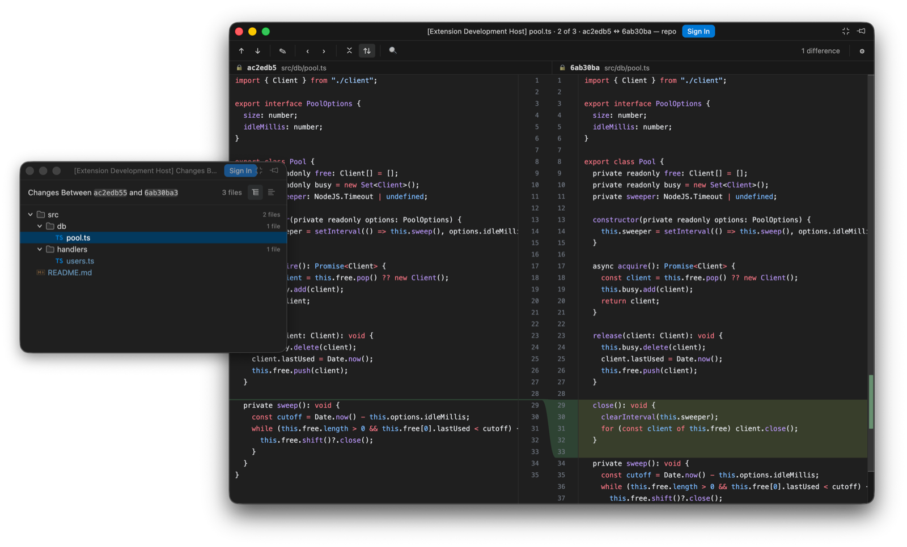
The diff viewer in its own window, beside the Changes window.
Per-window diff options. ignore whitespace, highlight granularity (line / word / character / off), collapse unchanged fragments and synchronised scrolling. VS Code's diffEditor.* equivalents are global settings, so these have no native counterpart
Unified view. the settings menu can switch the diff from side-by-side to a single-column unified layout: old lines then new lines for each change, folds and find included. Modified lines keep their modified colouring on both halves rather than posing as removed/added — an edited line is not an addition. Sync-scroll controls hide in unified mode (one column has nothing to synchronise), and single-file layouts for added or deleted files ignore the toggle
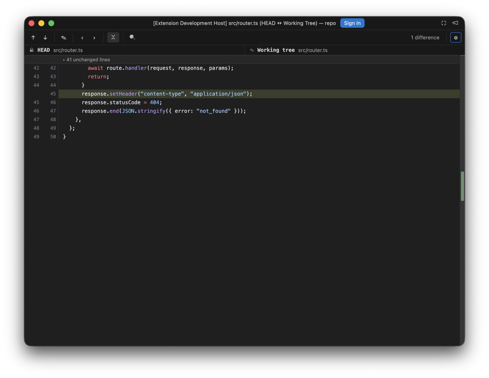
The unified layout.
Changed
3-way merge editor rebuilt on the diff stack. the merge editor is now three Porcelain diff panes on one shared scroll axis, in the IDEA order: yours on the left, the editable result in the middle, theirs on the right. node-diff3 runs once to seed the result buffer and the conflict regions; every accept, revert or keystroke after that is a splice into the result followed by a re-derive of the two live pair diffs. The verbs ride the gutter connectors — accept (≫/≪), ignore, revert to base, with accept-both reachable IntelliJ-style — the result pane is a real editor built from scratch — click anywhere and type, with selection, clipboard, IME composition and word movement, and typing inside a conflict resolves it — and a single undo/redo timeline covering typed edits and gutter verbs alike, conflict stepping, collapse of unchanged regions and per-pane find come with the shared stack. Conflict colouring follows each side's own state rather than the live diff, in every decision state: a still-takeable side stays red with its connector tapering to the exact row an accept would splice at, while a side that landed — or a conflict resolved by typing — goes quietly green. Apply stays disabled until every conflict is resolved. The legacy merge editor is replaced outright; unlike the diff viewer, this is not gated by porcelain.diff.viewer
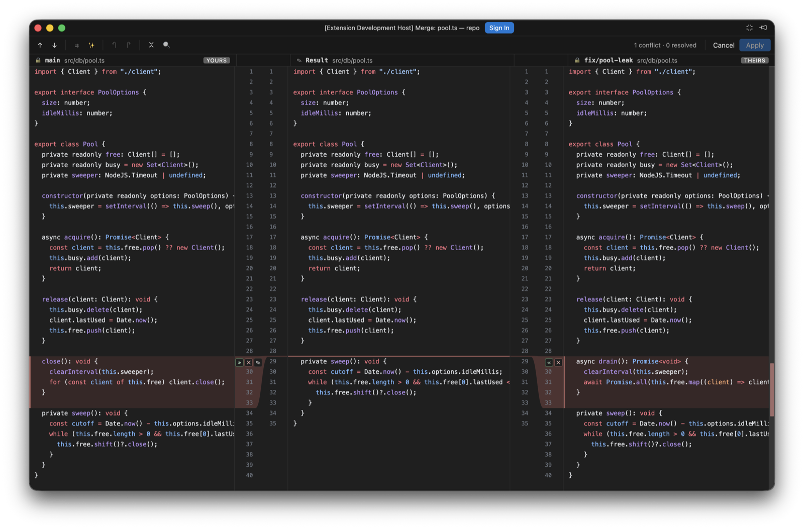
Yours, Result, Theirs, with the verbs on the gutter connectors.
Diff titles carry position and both revisions. a diff is now titled panel-store.ts · 3 of 7 · 07748ba ↔ af89dd2. File-stepper position used to be reported through a transient status-bar message, which the compact floating diff window never shows
Next File Diff / Previous File Diff renamed to Next File / Previous File
Fixed
Independent scrolling when synchronised scrolling is off. the left pane was pinned to the top of the file, so only the right side ever moved. Each pane now scrolls on its own, seeded from wherever it already was so switching the toggle never makes the view jump
A stalled pane holds its anchor mid-window. scrolling through a large insertion froze the other side with the insertion point at the very top, pushing every line before it off screen. The stalled side is now lifted so its anchor sits in the middle of the pane, easing in and out at the edges of the gap, the way IntelliJ does it
The merge Result pane shows zero-height conflicts. when both sides add where the base had nothing, the region occupies no rows in the result, so neither the row colouring nor the pair-diff anchors had anything to draw and the middle pane showed nothing at all. The region now draws its own rule straight through the result, in its own colour
Dead palette commands removed. five porcelain.commitPanel.* commands were declared but never registered, so they appeared in the Command Palette and failed when invoked
Refresh icon has a home. the Git Log view's title menu was an empty contribution, leaving the declared refresh action unreachable
Branch and tag names no longer truncated in diff titles. the title shortened every ref with a blind substring(0, 7), turning feature/long-name into feature. Only actual object names are abbreviated now
Unsupported languages are no longer highlighted as TypeScript. the merge editor fell back to TypeScript's grammar for anything outside the six Shiki loads, colouring Go, Python and YAML with confidently wrong rules. The diff viewer and the rebuilt merge editor fall back to plain text instead
Notes
The Porcelain diff viewer is now the default; porcelain.diff.viewer: native restores VS Code's own diff editor. Working-tree diffs route to the Porcelain viewer too — the working-tree side is a real editor built on the same core as the merge result pane (click anywhere and type, with selection, clipboard, IME composition and one coalescing undo/redo timeline), and Cmd+S/Ctrl+S saves to disk (a dirty dot marks unsaved edits, and a banner offers reload-or-keep if the file changes on disk underneath). Index and historical sides stay read-only, and Edit Source remains the way to the real file. Binary and image diffs and very large text diffs show an in-viewer placeholder with an Open in editor action (images up to 10 MB per side render side by side, heavier ones degrade to the placeholder with both sizes; oversized text offers Show anyway). Find, keyboard navigation and the screen-reader story are all in place
Renamed to Porcelain. the extension ID is now sultanofcardio.porcelain, commands are porcelain.*, the setting is porcelain.diff.openIn, and the content URI scheme is porcelain:. Named for Git's own word for the user-facing layer over its plumbing, and chosen to carry no implication of affiliation with JetBrains
New icon. the mark is now a P drawn as a branch leaving the trunk and merging back, with a commit node at the merge
Added
Third-party notices.THIRD-PARTY-NOTICES.md ships in the package, carrying the Apache 2.0 notice for the bundled JetBrains icons, the CC BY 4.0 attribution for Codicons, and the license text of all 59 bundled npm packages
0.7.0Rename
Added
Compare Versions. selecting two commits in the Git Log and right-clicking now offers Compare Versions, showing the net difference between the two snapshots, ordered oldest to newest whichever way they were selected
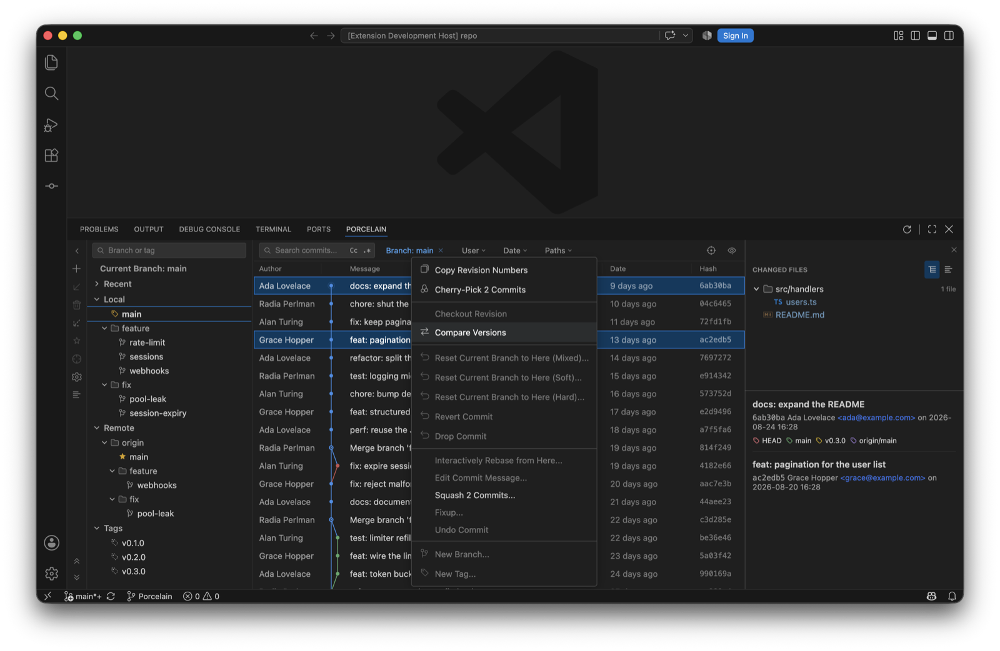
Compare Versions with two commits selected.
Floating diff windows. diffs and comparison file lists open in detached windows, with a single diff window reused for every file; ideaGit.diff.openIn switches back to editor tabsThe Changes window and the diff window, detached.
Changed
IDEA Git rebrand. the fork is renamed from BranchShift to IDEA Git, moving the extension ID to sultanofcardio.idea-git, commands to ideaGit.*, and the content URI scheme to idea-git:. Keybindings bound to branchshift.* need repointing
Single-commit actions during multi-selection. reset, revert, drop, checkout, cherry-pick, and branch/tag creation are disabled while several commits are selected, since the right-clicked row is not an obvious target
Minimum editor version. requires VS Code 1.86 for detached windows
Before Porcelain: BranchShift and JetGit Plus, 0.0.4 to 0.6.4 (47 releases)
The fork's lineage, English halves of the bilingual entries. Kept because the code is still here.
0.6.4
Changed
Branch dashboard responsibilities. split branch-tree modeling, state, presentation, and actions into focused modules with regression coverage
Stable tree presentation. made grouped and flat views derive consistently while restoring manual directory collapse state after mode and search changes
Repository-bound deferred actions. branch menus and dialogs retain the repository where each action originated, including after repository switches
Fixed
Accurate branch action feedback. action availability reflects upstream and branch state, while mutation failures report the relevant cause without stale messages
0.6.3
Changed
Publisher migration. moved the public repository and Marketplace identity to VitalHex and prepared the first vitalhex.branchshift package
Branch tree stability. normalized refs before rebuilding the branch tree, filtered symbolic remote defaults correctly, and preserved folding state across presentation changes
Special-path handling. preserved spaces, Unicode, rename endpoints, and special characters across working-tree status, diffs, and content URIs
Index and shelf safety. protected the index during selected operations, preserved unrelated staged changes, and rejected unsafe shelf mutations before changing repository state
Repository-bound request ordering. discarded stale responses, coalesced refresh bursts, and cleared repository-scoped UI state before loading a newly selected repository
Commit and Push correctness. split commit state responsibilities, made staged/unstaged diff boundaries explicit, and prevented stale Push selections from crossing repository switches
Host verification and missing refs. restored desktop host test execution with current application bundles and kept unavailable refs on the expected non-error path
0.6.1
Fixed
Owned README media. removed inherited demo GIFs and screenshots from the BranchShift README and release package. New product media will be captured from BranchShift builds instead of reusing the original fork's assets
0.6.0
Changed
BranchShift rebrand. renamed the public product from JetGit Plus to BranchShift, with a new original icon, Marketplace metadata, bilingual README, and migration-focused positioning: “Switch editors, not your Git workflow.”
Complete identity reset. package name, extension ID, commands, views, URI scheme, workspace state keys, diagnostics, and internal error types now use branchshift
Marketplace discovery. expanded Git, SCM, JetBrains, branch comparison, file history, multi-repo, VS Code, and Cursor keywords; added Visualization category and gallery metadata
Package hygiene. development metadata, SDD artifacts, local IDE files, ROADMAP, and previously built VSIX files are excluded from release packages
Breaking
The extension ID changes from strNewBee.jetgit-plus to strNewBee.branchshift. Existing JetGit Plus workspace state is intentionally not migrated; uninstall the old development VSIX before installing BranchShift
0.5.3
Changed
Commit-state styling. selected, hovered, and current-branch-highlighted commit rows now remain visually distinct, including a visible selection outline
Changed Files tree polish. added directory chevrons, whole-row expand/collapse, consistent file highlighting, and corrected nested indentation
Commit metadata alignment. ref, author, date, and hash columns share a stable grid and remain aligned across highlighted rows
Fixed
Commit panel file selection. double-clicking a changed file no longer leaves browser word selection in place
Ordinary log hover visibility. non-highlighted and current-branch-highlighted rows now both provide a visible hover state
0.5.2
Added
Compare with Current. local branches, remote branches, and tags can open repository-bound comparison editor tabs; each ordered ref pair keeps its own session-only tab
Bidirectional comparison logs. the upper log shows commits unique to the selected ref and the lower log shows commits unique to the current ref; both sides have independent Search, User, Date, Path, pagination, selection, changed files, and commit details
Changed
Current-branch reachability background. the ordinary Git Log uses a theme-aware blue background for commits reachable from the checked-out branch, with selected and hover states taking precedence
Shared commit actions. ordinary and comparison logs use the same repository-bound commit action registry, so future actions can be added once for both surfaces
Fixed
Repository-safe comparison refresh. comparison tabs ignore other repositories, coalesce short watcher bursts, preserve valid selections across refreshes, and keep detached comparisons pinned to the commit captured at creation
0.5.1
Added
Persistent branch and tag favorites. local branches, remote branches, and tags can be marked/unmarked from the tree, context menu, or sidebar; favorites are stored per workspace and repository and sorted first
Branch dashboard preferences. "Show Tags" and the single-click action (filter the log or navigate to the ref head) are now functional workspace preferences
Typed ref selection and navigation. branch and tag selections no longer collide when names match; navigating to a ref head loads older log pages when necessary and scrolls the virtualized list to the commit
Fixed
Branch Update semantics. current branches update from their configured upstream; non-current local branches fast-forward through a safe fetch refspec without switching or modifying the working tree. Missing upstreams, non-fast-forward updates, and branches checked out in another worktree now produce explicit errors
Long commit tooltip flicker. tooltip placement is now deterministic, viewport-clamped, and wrapped; commit-subject tooltips only appear for truncated text
Removed inert branch actions. removed the non-functional "Show My Branches" entry and replaced placeholder Favorite/Show Tags/single-click handlers with real stateful behavior
0.5.0
Removed
"Compare with Current" branch button. temporarily removed the "Compare with Current" action from the Branch sidebar. It constructed invalid jetgit-plus:/ diff URIs (the branch name was used directly as the URI path, with no ?ref= and no ?repo=), so GitContentProvider could never resolve real file content for either side and the diff was always empty; after a multi-repo switch the bare URIs also resolved against the wrong repo. It can be restored from this commit; when re-added it must build the diff URIs with buildGitContentUri(ref, filePath, repoId) (i.e. carry ?ref= and ?repo=), the same way the other diff handlers (e.g. showIdeaShelfFileDiff) already do. See the TODO(future) comment in BranchSidebar.tsx
Fixed
Shelf diff URIs now tagged with repo=.showIdeaShelfFileDiff now stamps &repo=<repoId> on both jetgit-plus:/shelved/... diff URIs (base and modified). Previously they carried only ?ref=, so after switching repos the URIs resolved against the wrong repo via the active-repo fallback; the diff content was silently served from (or failed to resolve in) the wrong repository
Changed
Identity independence. rebranded as independent extension "JetGit Plus": all git-brains identifiers (commands, views, view containers, URI scheme) renamed to jetgit-plus; publisher changed to strNewBee; extension ID is now strNewBee.jetgit-plus. The extension can now be installed alongside the upstream version without conflict
Version 0.5.0. starting version line for the independent fork
License. added contributor copyright notice
0.4.17
Added
Push Panel: multi-remote switching. push panel now supports switching between multiple remotes (e.g. origin, fork) via a dropdown selector, with separate branch input
Fixed
Push Panel: stale remote list. uses git remote directly; deleted remotes no longer appear
Push Panel: ahead commits respect selected remote. commit list updates dynamically when switching remotes
Dark theme: commit panel. fixed tabs, toolbar buttons, textarea border, checkboxes, buttons (Cancel/Commit and Push) all using hardcoded light colors
Dark theme: file name colors. commit panel and FileTree now use IDEA Dark Island palette (blue for modified, green for added, etc.) instead of invisible dark-on-dark colors
Dark theme: dropdown menus. all dropdown/context menu backgrounds, borders, hover states, separators fixed across git log, commit panel, push panel
Dark theme: push/rollback panels. Cancel button, menu items, checkbox styling all fixed
0.4.16
Added
Push Panel: multi-remote switching. push panel now supports switching between multiple remotes (e.g. origin, fork) via a dropdown selector
Push Panel: separate remote selector & branch input. remote is selected from a list, branch name is typed in a text input, independent of each other
Fixed
Push Panel: stale remote list. remote list now uses git remote directly and invalidates cache, deleted remotes no longer appear
Push Panel: default remote detection. opening push panel now detects the correct default remote from upstream tracking config instead of hardcoding "origin"
Push Panel: ahead commits respect selected remote. commit list updates dynamically when switching remotes, comparing against the correct remote tracking branch
0.4.15
Fixed
Revert Selected Changes for added files. no longer fails with "pathspec did not match" when reverting a file that was newly added in a commit
Rollback for staged new files. correctly removes file from index and disk for files not yet in HEAD (untracked → staged → rollback)
Remote branch checkout. "Checkout" on a remote branch (e.g. origin/dev) now creates a local tracking branch (dev) instead of entering detached HEAD
New Branch default name. "New Branch from 'origin/stg'" dialog now defaults to stg instead of origin/stg
Ref tag/branch labels truncated. commit message now properly shrinks with ellipsis so tag/branch labels always display fully
0.4.14
Added
Drop Commit. right-click a commit in git log to drop it from history while preserving its changes as unstaged modifications (IDEA-style)
Push Panel: editable remote branch target. click "origin : main" label to type a custom push target branch name
Push Panel: draggable split divider. drag the vertical divider between commit list and file changes to resize panes
Push Panel: progress bar + native notification. indeterminate progress bar during push, VS Code notification on completion
Push Panel: reuse FileTree + CommitInfo. right side now uses the same FileTree (with tree/flat toggle) and CommitInfo components as git log
Rollback Panel. dedicated confirmation tab (like Push Panel) with file tree, checkboxes, "Delete local copies of added files" option, and Rollback/Cancel buttons
(JetGit) Edit Source. right-click in diff editor to jump to the source file at the same line
Ref tag icons: dual icons for merged labels. "origin & dev" now shows both remote (purple) + local (green) overlapping tag icons
Changed
Rollback uses highlighted files. rollback button now operates on mouse-click selected (highlighted) files, not checkbox-selected files
No default checkbox selection. commit panel no longer auto-selects all files on load
(JetGit) Show File History. renamed from "Show File History" to clearly indicate plugin origin, focuses git log panel before filtering
Ref icon styling. 16px icons, 5px overlap spacing, white-fill with 1.2px colored stroke for IDEA-like layered effect
Fixed
Pull --rebase with unstaged changes. added --autostash flag so rebase works even with uncommitted changes (matches IDEA behavior)
Edit Source path resolution. correctly resolves git-brains:/ URI paths to workspace files
0.4.11
Changed
IDEA-style graph colors. lane colors updated to match IntelliJ IDEA's softer, professional palette (blue, red, green, golden, purple, teal, orange, light teal)
IDEA-style angular lines. graph lines changed from Bézier curves to IDEA-style diagonal transitions (vertical → diagonal → vertical)
Stub lines with arrows. branch tips whose parents are beyond the loaded range now show a solid line with a downward arrow (matching IDEA) instead of dashed stubs
Branch ahead/behind indicators. shows green ↗ for ahead and teal ↙ for behind on branch names in the tree (IDEA style)
Ref icon colors. remote-branch and tag icon colors updated to match the new graph palette
Fixed
Graph hidden by header. git graph SVG no longer renders above the column header when scrolling; header properly clips the graph
Node-text overlap. improved per-row max column tracking to prevent graph nodes from overlapping commit message text
Date-order sorting. git log now uses --date-order for commit ordering consistent with IDEA
0.4.10
Added
Create Branch dialog. replaced native input box with a custom dialog featuring "Checkout branch" and "Overwrite existing branch" checkboxes, matching JetBrains style
Inline error in Create Branch dialog. shows git error message (e.g. branch already exists) directly in the dialog instead of only logging to console
Fixed
Rollback toolbar button. the Rollback button in the commit panel toolbar now works (was missing onClick handler)
0.4.9
Added
Tooltip on truncated branch names. hover over ellipsized branch names to see full name via custom Tooltip
Tooltip on truncated commit messages. hover over ellipsized commit subjects to see full message
Tooltip on ref/tag labels. hover over branch/tag labels in commit rows to see full ref names
Directory rollback. added "Rollback..." option to folder context menu to revert all files in directory
Fixed
Tooltip renders via portal. tooltips now render to document.body, preventing clipping by overflow:hidden containers
Tooltip auto-flip. when near viewport top edge, tooltip automatically flips to bottom
Context menu viewport overflow. file and folder context menus auto-adjust position near viewport edges
Context menu dismiss on blur. clicking outside webview now closes context menus
Preserve file selection on refresh. refresh no longer resets checkbox state, preserves user selections
Behind count font size. reduced to 0.85em to match branch name size
Thin scrollbar. 6px scrollbar that doesn't expand on hover
0.4.8
Added
Column visibility toggle. right-click the column header or use the eye icon (View Options) in the toolbar to show/hide Author, Date, Hash columns, similar to IntelliJ IDEA
View Options button. eye icon button on the far right of the toolbar with a dropdown for column visibility
Branch panel collapse button in sidebar. the "<" collapse button is now at the top of the left toolbar (BranchSidebar), matching JetBrains layout
New Branch input pre-filled. "New Branch from..." now pre-fills the input with the source branch name (fully selected)
Fixed
Diff icon. replaced with official JetBrains expui/vcs/diff.svg icon (two offset arrows → ←) across all context menus and toolbars
Compare with Current icon. now uses the official diff icon instead of the external-link style
Group By Directory icon. replaced with JetBrains groupByPackage icon (folder inside brackets)
Settings icon. replaced with stroke-based gear icon for better clarity
Ref badges right-aligned. tag/branch labels in the git log are now right-aligned within the message column
Context menu viewport overflow. file and directory context menus now auto-adjust position when near viewport edges
Context menu dismiss on blur. clicking outside the webview (editor, other panels) now correctly closes context menus
Directory rollback. added "Rollback..." option to folder context menu to revert all files in the directory
Changed
Panel layout. uses proportionalLayout={false} so collapsing left/right panels gives all space to the center git log
All buttons have tooltips. enforced tooltip on every interactive button
0.4.7
Added
Merge conflict banner. displays "Merging {branch}" with continue/abort buttons when merge conflicts are detected, matching IntelliJ IDEA behavior
Merge Conflicts file group. conflicted files are separated into a dedicated "Merge Conflicts" group with a "Resolve" link
Rebase banner. displays "Rebasing {branch} (step/total)" with continue/abort buttons during rebase
Custom fast Tooltip. 300ms delay tooltip component replacing slow native browser tooltips across all buttons
Fixed
Merge editor Apply button. accepting a single side now auto-resolves the conflict block, enabling the Apply button immediately
Rebase/Merge continue button. opens conflict resolution panel when unresolved conflicts exist, commits only when all resolved
Changed
Rebase continue/abort icons. replaced with JetBrains official expui-style icons (double chevron >> and ×)
Merge editor buttons. restyled to match plugin design (rounded corners, hover effects)
Tooltip unified. all toolbar, merge editor, and gutter buttons now use the custom Tooltip component
0.4.6
Added
Current branch sorted to top. the checked-out branch (or folder containing it) is always shown first in the Local branch tree
Commit message history dropdown. click the clock icon next to "Amend" to pick from recent commit messages
Refresh syncs both panels. the refresh button in the commit panel now also refreshes the git log view
Fixed
History dropdown opens upward to avoid being clipped by panel boundary
Unified design language: 6px border-radius, consistent hover colors (#ededed), IDEA blue focus (#3574f0)
File status colors matching IDEA: green (added), blue (modified), red (unversioned), gray (deleted)
Unknown file types use IDEA-style three-line text icon
Changed
Tab order: Commit | Shelf | Stash (matches IDEA layout)
Global button/input border-radius unified to 6px via --radius CSS variable
Tab hover/active styles match IDEA (rounded, light blue active state #dfe7f5)
Context menu hover color matches existing branch panel (#e8f0fe)
Commit message textarea focus border uses IDEA blue (#3574f0)
Fixed
Binary files (zip, png) now open correctly via Jump to Source
Single-file shelve no longer pulls in unrelated staged files
Shelf/Stash lists auto-refresh after operations
0.3.5
Added
Status bar button "IDEA Git" at the bottom to quickly open/focus the Git Graph panel
0.3.4
Fixed
Input hover/focus border now uses hardcoded IDEA blue (#3574f0) instead of VS Code theme variable which was overriding it
0.3.3
Changed
User and Date filter dropdowns now also have search input (same as Branch)
Removed unused FilterDropdown component
0.3.2
Added
Branch filter dropdown now has a search input for quick filtering when there are many branches
0.3.1
Fixed
Filter dropdowns (Branch/User/Date) now close when clicking anywhere outside, scrolling, or window blur
0.3.0
Changed
Input border colors match IDEA: default #c4c4c4, focus/hover #3574f0
0.2.9
Fixed
Refresh button (built-in) also respects minimum 1s progress bar display
0.2.8
Fixed
Progress bar shows for minimum 1 second, ensuring animation is always visible even for fast operations
0.2.7
Fixed
Remove duplicate refresh button from panel title (keep VS Code's built-in one)
0.2.6
Fixed
Progress bar animation improved: thicker (3px), faster (1s), gradient glow effect for better visibility
0.2.5
Fixed
Progress bar now shows immediately when clicking git operations (checkout, push, pull, merge, rebase, cherry-pick, reset, revert, delete) instead of waiting for server response
0.2.4
Added
Auto-maximize editor when opening Diff viewer (same as Merge editor)
0.2.3
Added
Auto-maximize editor when opening 3-Way Merge Editor for full-screen experience
0.2.2
Added
IDEA-style blue progress bar during async git operations (checkout, push, pull, merge, rebase, cherry-pick, reset, revert)
0.2.1
Added
Show File History command. right-click a file in editor or Explorer → "IDEA Git: Show File History"
Also available from Command Palette
Triggers file history view in the Git Log panel
Changed
Command category renamed to "IDEA Git" for easy recognition
0.1.9
Added
Show in Git Log. when viewing file history, right-click a commit to jump back to full log view at that commit
Tab-style file history. file filter displays as a closeable tab (History: filename.tsx ×)
0.1.8
Fixed
Changed Files panel now only shows the filtered file when "History Up to Here" is active
0.1.7
Added
History Up to Here. right-click a file → show only commits that modified it (git log -- <file>)
File filter indicator in toolbar with clear button
0.1.6
Added
SEO keywords for Marketplace discoverability
Improved description with more searchable terms
0.1.4
Fixed
Repository URL now points to the correct fork
0.1.3
Added
Chinese README (简体中文文档)
GIF demos for branch checkout and commit context menu
0.1.1
Added
Branch Context Menu. Checkout, New Branch, Checkout and Rebase, Rebase, Merge, Rename, Delete, Update, Push
Commit Context Menu. Copy Revision Number, Cherry-Pick, Checkout Revision, Reset (Mixed/Soft/Hard), Revert, New Branch, New Tag
Changed Files Context Menu. Show Diff, Edit Source, Open Repository Version, Revert Selected Changes, Cherry-Pick Selected Changes, Copy Path, Copy File Name
Branch search. filter branches and tags by name
Commit filters. filter by Branch, User, Date range
Resizable columns. drag to adjust Author, Date, Hash column widths
Hash column. short commit hash in dedicated column
Current branch indicator. shows name next to "Current Branch"
IntelliJ IDEA icons. official SVG icons from intellij-icons.jetbrains.design (Apache 2.0)
Context menu icons. Cherry-Pick (cherry), Revert (undo arrow), Copy, Edit, Diff, Branch, Tag
IDEA-style menu colors. light background, soft shadow, subtle borders
Changed
Search inputs match IDEA style with search icon and clear button
Filter dropdowns use stroke-based chevron icons
Folder icons use official IntelliJ folder SVG (light fill + stroke)
Context menus render via React portal for proper positioning
Menu auto-adjusts position to stay within viewport
Menu dismisses on outside click, scroll, blur, and resize